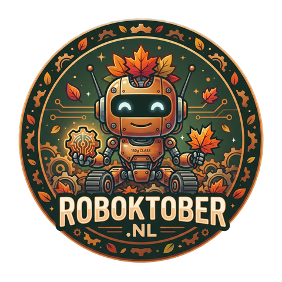
Van joystick tot wiel
De hele hardware-stack van een vechtrobot van 150 gram
Rein · PHP Meetup Groningen · 5 november 2026
Wie ben ik
Rein · software engineer & maker
Overdag code, 's avonds de soldeerbout.
- Software Engineer bij Dawn Technology
- Oprichter Nederlandse PHP Gebruikersgroep (2001) → PHPBenelux
- Oprichter Hackerspace Drenthe (Coevorden)
- Van een PHP-community bouwen… naar een maker-community bouwen
- Voorjaar: DrentheNoodNetwerk.nl · mei = MeshCore-maand
- Vanaf augustus: Roboktober → website, PCB's, onderdelen, 3D-ontwerpen, organisatie
Ik ben meer bouwer dan prater — dus vandaag laat ik vooral zien wát we gebouwd hebben.
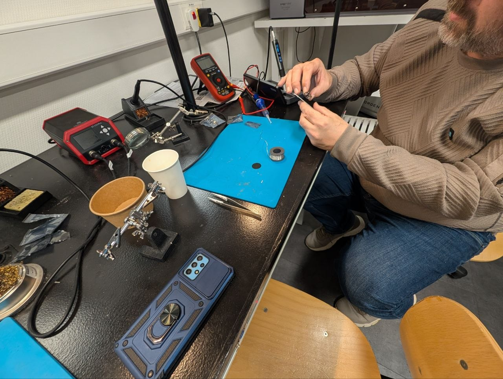
Handen omhoog
Wie heeft weleens iets gesoldeerd?
Wie heeft een Arduino of ESP32 geprogrammeerd?
De rode draad
Wat gebeurt er als je de joystick naar voren duwt?
Dat laten we zo zien: van smartphone naar motor.
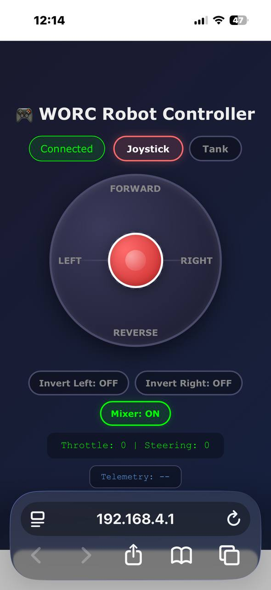
HET EVENT
Roboktober
Hoe het begon — en wat is een antweight eigenlijk?
Hoe het begon
Wallie (WallieOnline)
- Al heel lang bezig met antweight-robots
- Team captain Team Upstart — o.a. Cookiemonster, TLC, Kecil
- 🏆 Veel prijzen gewonnen — o.a. 2e plaats op Boeliebots 2026 (Groningen)
- Komt vaak naar de hackerspace om robotonderdelen te maken met de freesbank en CNC-apparatuur
- Idee: samen een event maken → mensen enthousiast maken voor techniek én voor de hackerspace
Wallie aan het woord
video/wallie-kickoff.mp4 en hier een <video>-tag plaatsen (offline afspelen, zaal-WiFi niet vertrouwen)Het event
Roboktober
Een maand bouwen, testen en robot-actie — Hackerspace Drenthe + WallieOnline. Alleen of als team: kinderen, families, collega's.
| Wanneer | Wat |
|---|---|
| 7 okt | Kickoff: live demo, zelf sturen, start bouwen (livestream) |
| 14 okt | Workshop antweight bouwen |
| 21 okt | Afbouwen en testen |
| 28 okt | Technische keuring + Battle Day |
3D-printers, lasercutters en begeleiding in de hackerspace.
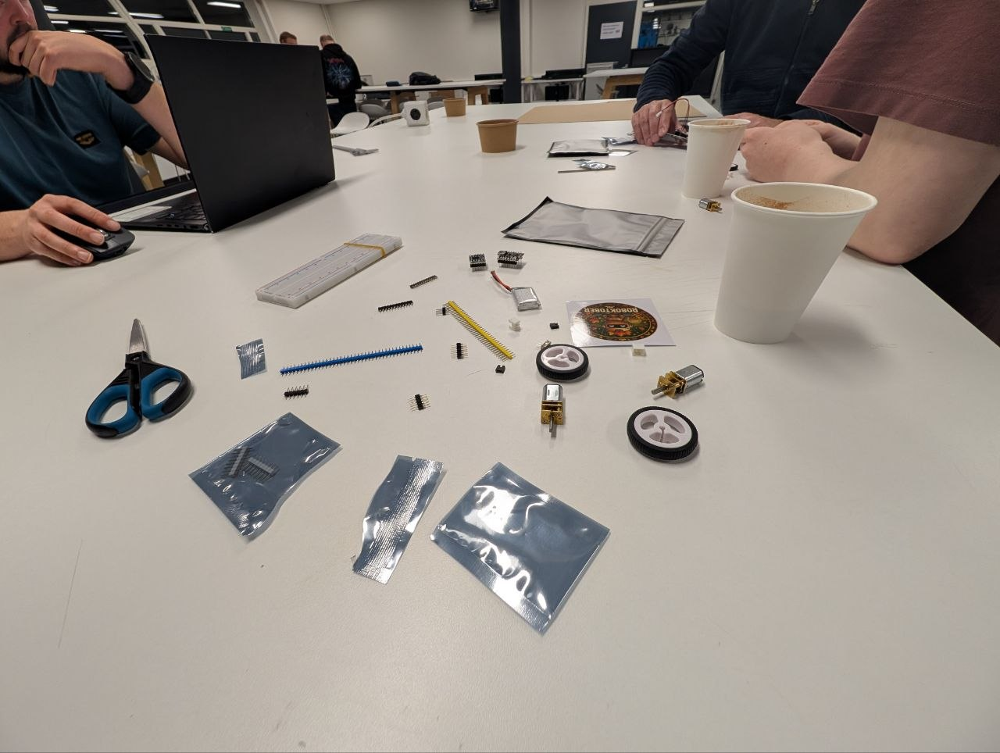
Wat is een antweight?
maximaal gewicht, alles inbegrepen
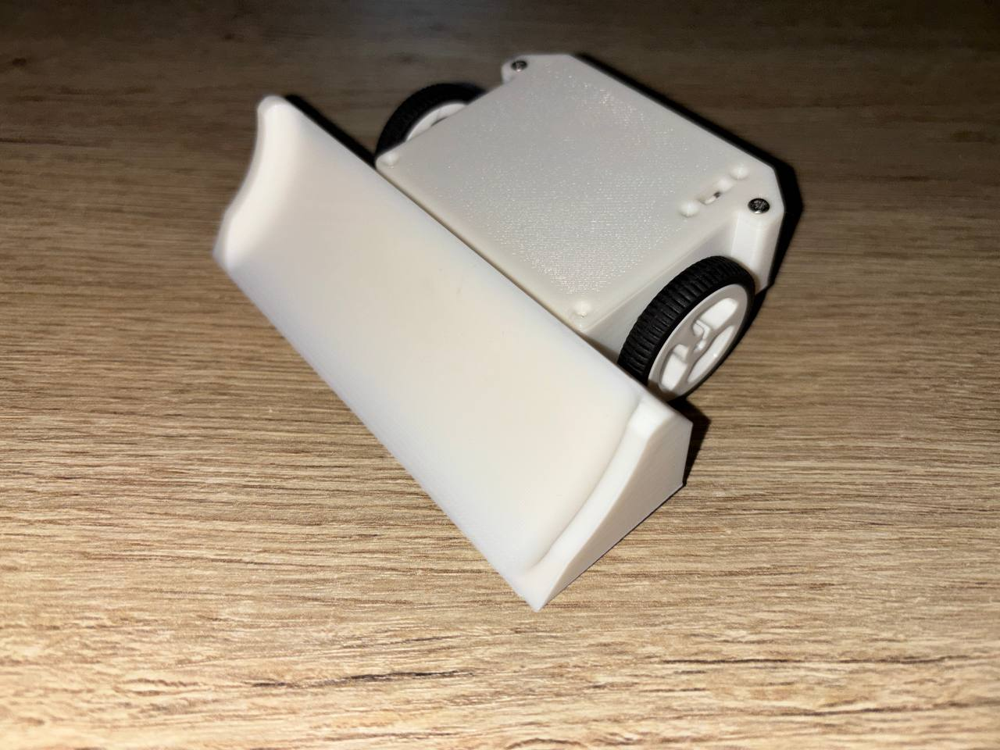
Gewichtsklassen & regels
Gewichtsklassen (UK)
- Fleaweight — 50 g
- Antweight — 150 g ← wij
- Beetleweight — 1,5 kg
- …
- Heavyweight — 110 kg (Robot Wars)
Typen
- Pushers / wedges
- Flippers
- Spinners
Veiligheid
- Open arena → bij Roboktober 2026 geen actieve wapens (alleen duwen/wedges)
- Gesloten arena → spinners en flippers wél mogelijk
- Keuring · failsafe
Veiligheid zit niet alleen in de arena, maar ook in de code — dat zien we zo.
DE ROBOT
Volg één commando
Van duim op het scherm tot wiel op de vloer
HARDWARE · ELEKTRONICA · 6 MIN
De print
Eerst de hardware: wat zit er in de robot — en hoe komt er stroom bij de motor?
Componenten & voeding
- ESP32-C3 SuperMini — WiFi + ESP-NOW
- DRV8833 — dubbele H-brug
- 2× N20 6 V, 50:1
- LiPo 1S → aan/uit → DRV8833; 2S optioneel via 5V-regelaar →
ESP_5V_IN - ⚠ Nooit
VIN → 3.3Voverbruggen
Pin-contract
| GPIO | Functie | Firmware |
|---|---|---|
| 5 | DRV8833 nSLEEP | STBY_OUT_PIN |
| 6 / 7 | Motor links IN2/IN1 | IN2A / IN1A |
| 9 / 10 | Motor rechts IN1/IN2 | IN1B / IN2B |
| 8 | Failsafe-LED | FLED_OUT_PIN |
KiCad · één kans
Mijn eerste PCB ooit — en die moest in één keer werken.
- Revisies v2 → v3 → v4 vóór productie
- v2: 2S-prototype · v3: DRC-fixes + power-issues · v4: 1S, ~€25 per kit
- J8 expansion header voor uitbreidingen
- 🔁 Rondgeven: kale + bestukte PCB
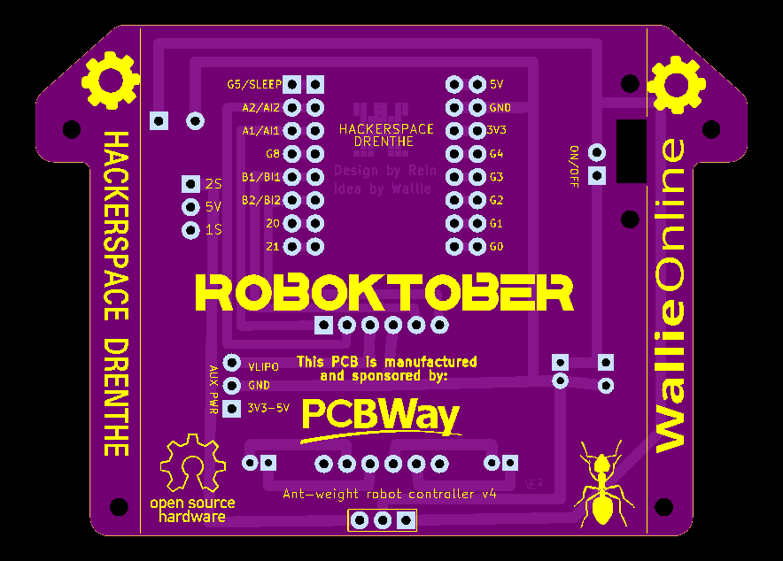
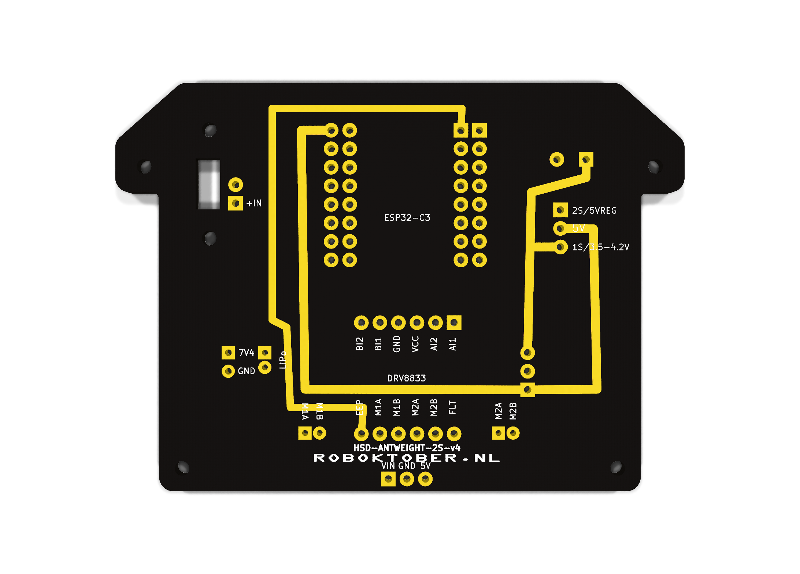
Een drukproef vóór de oplage: een fout zit er straks 150× in.
Validatie · unit tests voor elektronica
- Planpincontract in Markdown: welke pin → welk net
- DoAI + ik passen schema & layout aan in KiCad
- Check
kicad-cliERC/DRC + AI-test: elke pad tegen het contract - Actfout? fixen → nieuwe revisie (v2 → v3 → v4)
Alle 150 printplaten werkten. Wat een opluchting.
HARDWARE · 3D-PRINT · 2 MIN
Het chassis
Waar zit de print in? Een behuizing als code — en dan 3D-printen
Waarom OpenSCAD?
Een 3D-model als tekstbestand — niet klikken, maar programmeren.
Fusion / FreeCAD
- Klikken en slepen met de muis
- Binair projectbestand
- Maat wijzigen = handwerk
- Lastig voor AI om mee te werken
OpenSCAD
- Git-diffs: zie precies wat er veranderde
- Parameters:
pcb_clear = 0.3;→ alles schuift mee - Asserts: 8 maatcontroles, het model weigert als iets niet past
- AI kan het lezen én schrijven: 505 regels tekst
Voor developers: het is gewoon code — dus versiebeheer, review en tests werken ook hier.
Chassis als code · OpenSCAD
part = "lid"; // [assembly, tub, lid, lid_accent, motor_clamp, ...]
/* [PCB] */
pcb_w = 78;
pcb_l = 56;
pcb_holes = [[9.14, 3.14], [68.86, 3.14], [3.95, 44.56], [74.05, 44.56]];
// …
assert(well_y1 + iw_t <= 41 - pcb_clear, "wheel well hits wide PCB part");
assert(90 - ramp_angle <= 50, "nose overhang too steep to print without support");
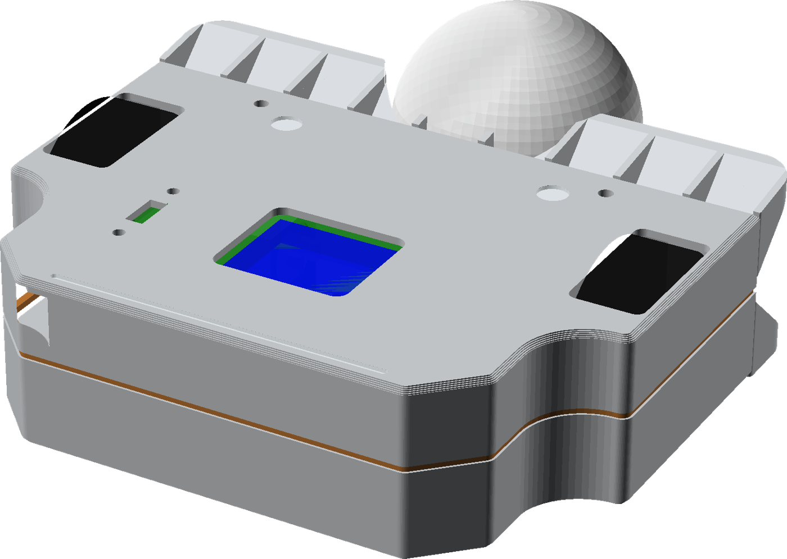
| In de code | Herkenbaar als |
|---|---|
part = "tub" | Eén ontwerp, losse onderdelen exporteren |
Afgeleide maten (axle_z = nose_h / 2) | Spreadsheetformule: één maat aanpassen, de rest rekent mee |
assert(…) | Automatische maatcontrole: het model weigert als iets niet past |
antweight_chassis_v0.4_integrated.scad (L7–16, L186, L191)
Zelfde print, ander chassis
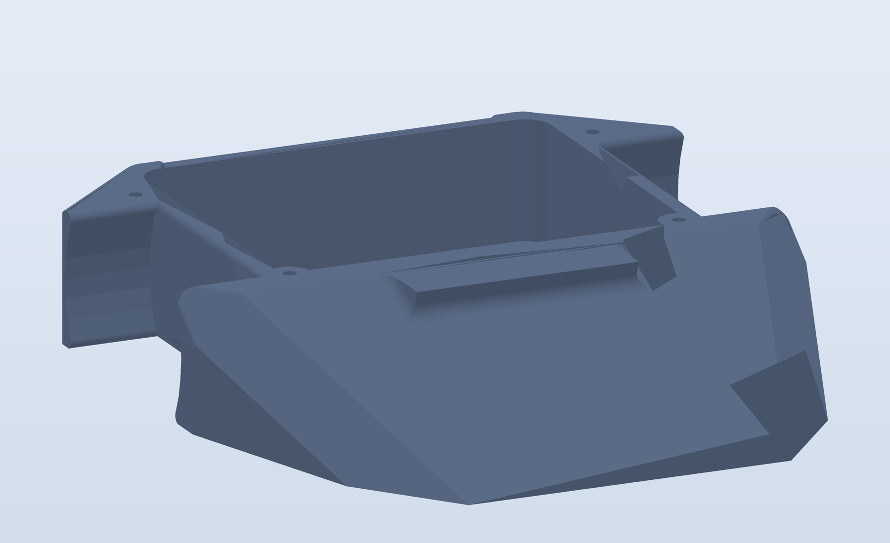
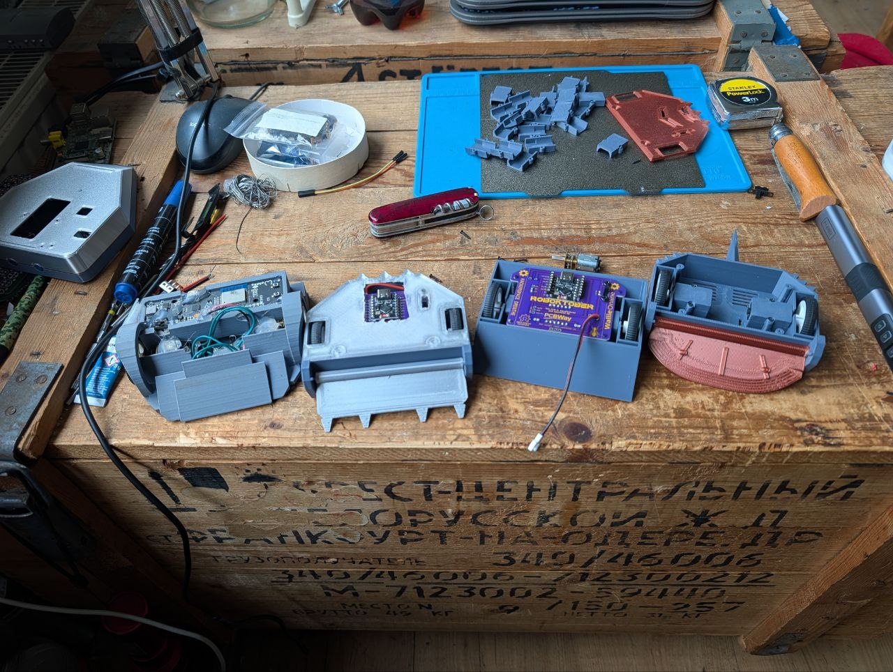
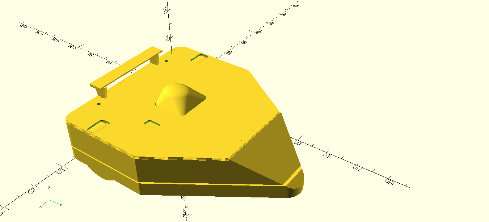
PCB-contour, gaten, motor- en wielmaten gedeeld → elk chassis past op dezelfde print.
Een standaardmaat zoals LEGO-noppen.
SOFTWARE · AFSTANDSBEDIENING · 8 MIN
De controller
Hoe wordt een tik op je scherm een commando?
Twee controllers, één doel
📱 Telefoon (WebUI)
- Robot is zelf het WiFi-netwerk
- Browser, geen app
- WebSocket
🎮 Eigen remote
- Tweede ESP32 + analoge stick
- Of een gewone RC-zender (CPPM)
- ESP-NOW
Beide leveren hetzelfde af: gas + sturen
WebUI · de robot als WiFi-router
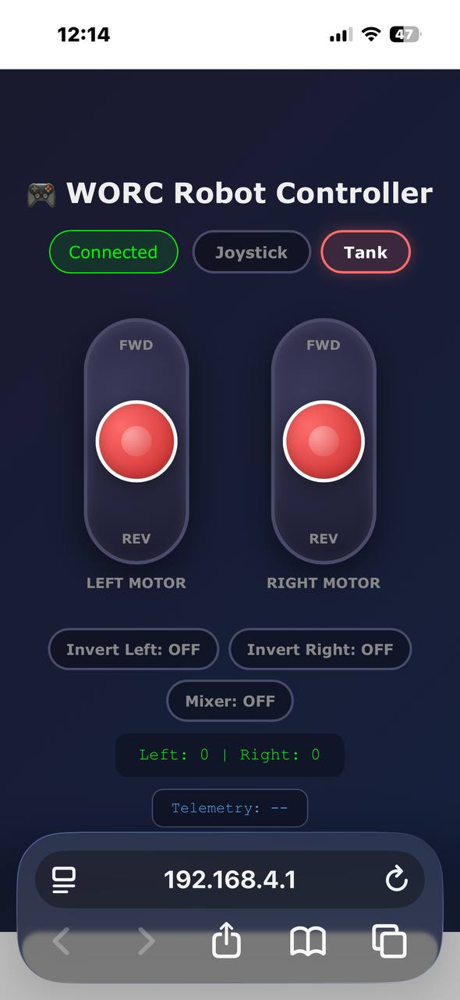
- WiFi
worc-424242· wachtwoordworc1234 - Browser naar
http://192.168.4.1 - Geen app, geen router, geen zender
- WebSocket: één open lijn i.p.v. steeds opnieuw verbinden → weinig vertraging
- Kies: joystick of tank (twee sliders)
- Mixer, invert links/rechts: instellen i.p.v. code wijzigen
- Firmware van Wallie (met onze fix) — broncode volgt in Wallie's repo
Net als de instellingenpagina van je router thuis.
Eigen remote · ESP32 → ESP-NOW
Eén gedeeld format — staat letterlijk in béide sketches:
typedef struct rc_data_t {
uint16_t gAIL, gELE, gTHR, gRUD, gAUX1, gAUX2, gAUX3, gAUX4; // 8 × 2 = 16 bytes
} rc_data_t;
rc_data_t gEspn;
① Zender vult in en verstuurt (elke 20 ms)
if (gMode == MODE_STICK && current_millis >= last_stick_millis + 20) {
last_stick_millis = current_millis;
gStick[AIL] = myProcessInput(myReadAnalogAvg(VRX_IN_PIN), 0, 4095, 50);
gStick[ELE] = myProcessInput(myReadAnalogAvg(VRY_IN_PIN), 0, 4095, 1);
//gStick[AIL] = map(analogRead(VRX_IN_PIN), 0, 4095, 2000, 1000);
//gStick[ELE] = map(analogRead(VRY_IN_PIN), 0, 4095, 2000, 1000);
if (gStick[AIL]) gEspn.gAIL = gStick[AIL];
if (gStick[ELE]) gEspn.gELE = gStick[ELE];
if (gStick[THR]) gEspn.gTHR = gStick[THR];
if (gStick[RUD]) gEspn.gRUD = gStick[RUD];
if (gStick[AUX1]) gEspn.gAUX1 = gStick[AUX1];
if (gStick[AUX2]) gEspn.gAUX2 = gStick[AUX2];
if (gStick[AUX3]) gEspn.gAUX3 = gStick[AUX3];
if (gStick[AUX4]) gEspn.gAUX4 = gStick[AUX4];
esp_now_send(0, (uint8_t *) &gEspn, sizeof(gEspn)); //Send to all peers
② Ontvanger gebruikt hetzelfde format en herkent de waarden
void OnDataRecv(const uint8_t * mac, const uint8_t *incomingData, int len) {
if (len == sizeof(gEspn)) {
memcpy(&gEspn, incomingData, sizeof(gEspn));
if (gEspn.gELE > unThrottleMin && gEspn.gELE < unThrottleMax) {
gThrottle = map(gEspn.gELE,unThrottleMin,unThrottleMax,-255,255);
gThrottle = constrain(gThrottle,-255,255);
if (abs(gThrottle) <= RC_DEADBAND) {
gThrottle = 0;
}
}
if (gEspn.gAIL > unSteeringMin && gEspn.gAIL < unSteeringMax) {
gSteering = map(gEspn.gAIL,unSteeringMin,unSteeringMax,-255,255);
gSteering = constrain(gSteering,-255,255);
if (abs(gSteering) <= RC_DEADBAND) {
gSteering = 0;
}
}
//Serial.print(gEspn.gTHR); Serial.print(" ");
//Serial.print(gEspn.gRUD); Serial.println();
lastCommandTime = millis();
}
}
Geen JSON, geen parser: 16 ruwe bytes. Zender en ontvanger moeten precies hetzelfde format gebruiken.
SOFTWARE · OP DE ROBOT · 8 MIN
De firmware
Het getal −255 … 255 moet een motor worden
Flashen vanuit de browser
- Web flasher (Web Serial): USB-kabel erin, knop indrukken, klaar
- Geen toolchain, geen Arduino IDE
- Alleen Chromium-browsers
- Valkuilen: USB-kabel die alleen laadt, ontbrekende driver
Inspiratie: wallieonline.nl/blogs/worc-robot-controller-nl.html
Firmware-update zoals bij je printer of router — maar dan via de browser.
Hoe komt die firmware op de chip — en wat staat erin?
Schalen + deadband
void OnDataRecv(const uint8_t * mac, const uint8_t *incomingData, int len) {
if (len == sizeof(gEspn)) {
memcpy(&gEspn, incomingData, sizeof(gEspn));
if (gEspn.gELE > unThrottleMin && gEspn.gELE < unThrottleMax) {
gThrottle = map(gEspn.gELE, unThrottleMin, unThrottleMax, -255, 255);
gThrottle = constrain(gThrottle, -255, 255);
if (abs(gThrottle) <= RC_DEADBAND) {
gThrottle = 0;
}
}
// … idem gAIL → gSteering …
lastCommandTime = millis();
}
}
Deadband (RC_DEADBAND 40): een joystick staat in rust nooit precies op 0 — er is altijd wat ruis en speling. Alles tussen −40 en +40 wordt hard 0, anders kruipt de robot langzaam weg terwijl je niks doet.
OnDataRecv() L129–150 (ingekort)
Mixing
void updateMotors() {
if (gMixerOn) {
//Mix gThrottle and gSteering
gMotorLeft = constrain((gThrottle + gSteering), -255, 255);
gMotorRight = constrain((gThrottle - gSteering), -255, 255);
} else {
//Mixer off
gMotorLeft = constrain(gThrottle, -255, 255);
gMotorRight = constrain(gSteering, -255, 255);
}
//Apply per-channel direction inversion
if (gInvertLeft) gMotorLeft = -gMotorLeft;
if (gInvertRight) gMotorRight = -gMotorRight;
| Gas | Sturen | L | R |
|---|---|---|---|
| 200 | 0 | 200 | 200 |
| 200 | 100 | 255 | 100 |
| 0 | 150 | 150 | −150 |
Sturen als een tank of graafmachine: verschil in snelheid links/rechts = draaien.
PWM: een dimmer
if (gMotorLeft > 0) { //DIRECTION_FORWARD
ledcWrite(0, LOW); //IN1A_OUT_PIN
ledcWrite(1, abs(gMotorLeft)); //IN2A_OUT_PIN
} else if (gMotorLeft < 0) { //DIRECTION_REVERSE
ledcWrite(0, abs(gMotorLeft)); //IN1A_OUT_PIN
ledcWrite(1, LOW); //IN2A_OUT_PIN
} else { //DIRECTION_STOP
ledcWrite(0, LOW); //IN1A_OUT_PIN
ledcWrite(1, LOW); //IN2A_OUT_PIN
}
5000 Hz, 8 bit: 0 = uit · 255 = altijd aan · 128 ≈ half vermogen
ledcWrite() L106–125 · rechter motor idem op kanaal 2/3
H-brug: vier schakelaars
DRV8833 = twee H-bruggen in één chip. IN1/IN2 bepalen welke schakelaars dicht zijn.
Batterij omgekeerd aansluiten — maar dan elektronisch, duizenden keren per seconde.
Failsafe
void loop() {
// Check for command timeout (safety feature)
if (millis() - lastCommandTime > COMMAND_TIMEOUT) {
if (gThrottle != 0 || gSteering != 0) {
gThrottle = 0;
gSteering = 0;
Serial.println("Command timeout - stopping motors");
}
digitalWrite(FLED_OUT_PIN, (millis() / 250) % 2); //Failsafe LED blinking
} else {
digitalWrite(FLED_OUT_PIN, LOW); //Link ok LED solid on
}
updateMotors();
}
500 ms geen pakket → stop · 🔴 LIVE: remote uit
loop() L191–205 · COMMAND_TIMEOUT = 500
Dodemansknop in de trein: laat je los, dan stopt alles.
NA DE TECHNIEK
Demo & traject
Zelf sturen — en hoe bouw je dit in 3 maanden?
Nu weet je wat er gebeurt
Wie wil sturen?
Live demo · jij stuurt
- WiFi:
worc-…(per robot een eigen SSID) - Wachtwoord:
… - Browser:
http://192.168.4.1 - Duwgevecht! 🥊
Laatste test: zet je WiFi uit → robot stopt.
Zijpad · het PHP-stuk
roboktober.nl
- API-first: Laravel API + Filament admin, Vue 3 + Vite
- Build Hub: BOM, STL- en firmware-downloads, bouwgids — de site als distributiekanaal voor hardware
- Teamregistratie (account-first) met captain-review
- PHPStan · Rector · Pint · PHPUnit · Vitest · Playwright · ADR's
github.com/Hackerspace-drenthe/www.roboktober.nlNiet alleen het eindresultaat: ook de plannen, de iteraties en de fouten. Fork het, bouw het na, verbeter het.
3 maanden · het traject
Zwaarst: de elektronica. 3D = snel itereren · PCB = één kans.
Hoe: AI-assisted development
specs + randvoorwaarden
tegen het plan
en verfijnen
- Eén plan als bron van waarheid (
PLAN.md+ changelog) - Validatie per domein: DRC/ERC · PHPStan + tests · testprints · code review
- VS Code + GitHub Copilot, met custom instructions
Wat AI níet deed
Het plan maken — en het duizend keer itereren en verbeteren. Dát is de basis.Elke stap valideren en eventueel corrigeren.
En het fysieke werk: bestellen, solderen, deelnemers helpen.
TOT SLOT
Afsluiting
Hoe ging het — en hoe begin je zelf?
Hoe ging het? · Roboktober 2026
- Hoogtepunten en beste/raarste robots invullen
- Wat ging mis (hardware én software) invullen
- Wat leerden we invullen
Wat gebeurt er als je de joystick naar voren duwt?
- Antweight: 150 g, ~€25, laagdrempelig.
- Elektronica heeft vaste afspraken en controles, en een 3D-model kan gewoon code zijn.
- De controller is software: geen app nodig, wel invoer controleren en weten wie je bestuurt.
- Met een goed plan + AI + tests bouwt één developer dit in 3 maanden.
Hoe begin je morgen?
🧰 Kit
BOM + bouwgids via roboktober.nl💾 Firmware
WallieOnline op GitHub of de web flasher🖨️ Chassis
Pas een.scad-bestand aan en print- Hackerspace Drenthe (Coevorden): kom langs!
- Volgende editie Roboktober · Boeliebots (Groningen)
- roboktober.nl · hackerspace-drenthe.nl
- wallieonline.nl · github.com/wallieonline
- Kickoff + Wallie: youtube.com/live/qtz0UkJw4DU
 PCB's gesponsord door PCBWay
PCB's gesponsord door PCBWay
Vragen?
De robots blijven rijden — kom gerust sturen.